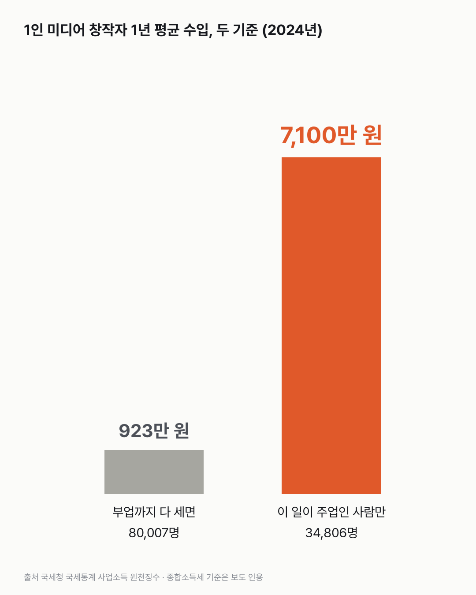
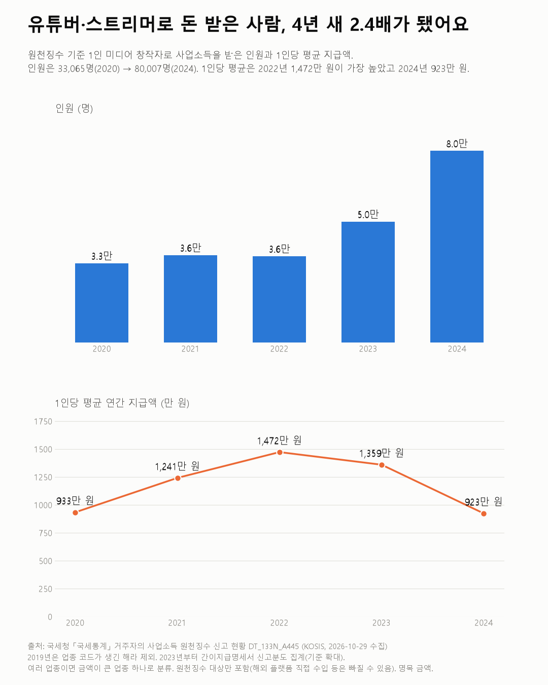
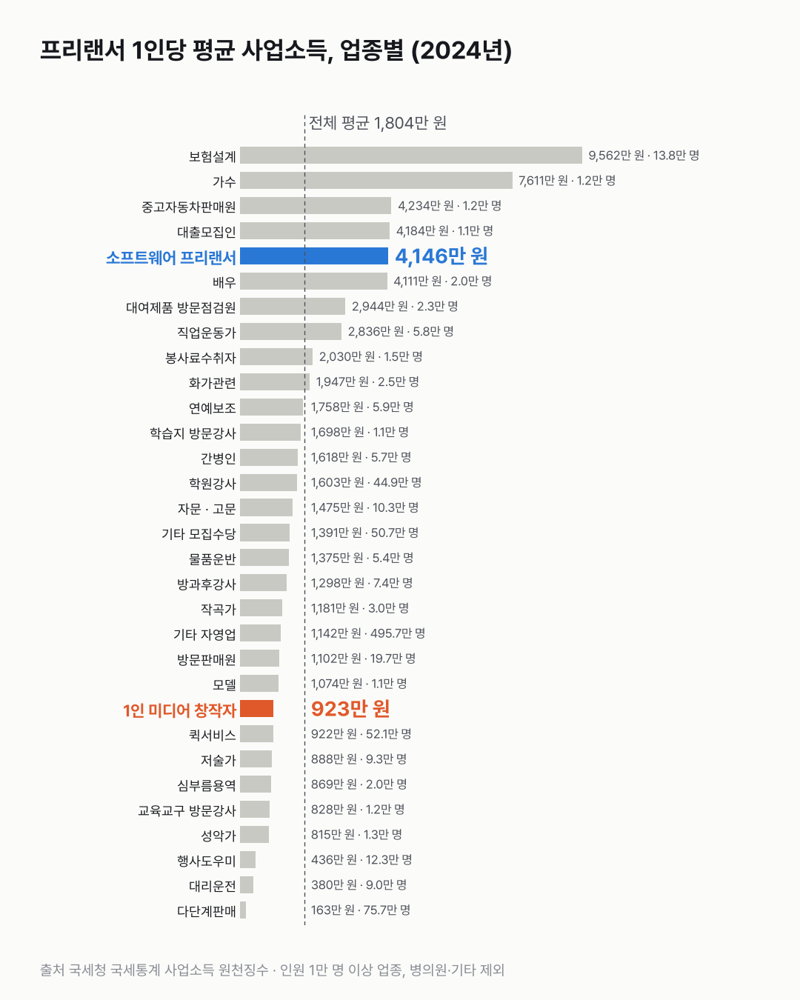

유튜버 평균 수입은 왜 923만 원도 되고 7,100만 원도 될까요
같은 '평균 수입'도 누구를 세느냐에 따라 8배 가까이 달라져요.

- '유튜버 평균 수입'으로 923만 원도, 7,100만 원도 나와요. 둘 다 국세청 자료예요.
- 부업으로 조금 받은 사람까지 다 세면 8만 명에 평균 923만 원, 이 일이 주업인 3만 5천 명만 세면 평균 7,100만 원이에요.
- 유튜버·스트리머로 돈을 받은 사람은 4년 새 2.4배가 됐는데, 2024년엔 사람이 는 만큼 돈이 늘지 않았어요.
국세청이 창작자를 세는 길은 둘이에요. 하나는 회사나 플랫폼이 돈을 줄 때 세금을 조금 떼고 신고한 기록이에요. 떼는 세금은 3.3%이고, 이 기록으로 세면 2024년에 1인 미디어 창작자로 돈을 받은 사람은 80,007명이에요. 부업으로 몇십만 원 받은 사람도 다 들어가요. 그래서 평균이 923만 원이에요. 다른 하나는 1인 미디어를 주업으로 세금 신고한 사람만 세는 거예요. 34,806명, 평균 7,100만 원이 돼요(보도 인용).
사람 수는 분명히 늘었어요. 돈을 받은 사람이 2020년 33,065명에서 2024년 80,007명이 됐어요. 받은 돈 전체도 3,084억 원에서 7,385억 원으로 2.4배가 됐어요.


2024년엔 둘이 다르게 움직였어요. 사람은 1년 새 59% 늘었는데 돈은 8%만 늘었어요. 1인당 평균은 1,359만 원에서 923만 원으로 내려갔어요. 물론 2023년부터 집계 범위가 넓어져서, 이 중 얼마가 실제 변화인지는 나눌 수 없어요.
다른 프리랜서 옆에 놓으면 아래쪽이에요. 같은 방식으로 돈을 받은 프리랜서 전체의 1인당 평균은 1,804만 원이에요. 1인 미디어 창작자 923만 원은 퀵서비스 922만 원과 거의 같았어요. 만 원 차이. 2024년에 처음 따로 집계된 소프트웨어 프리랜서는 1인당 4,146만 원이었어요.


8만 명을 받은 돈 순서로 줄 세우면 한가운데 선 사람은 얼마를 받았을까요. 이 표엔 평균만 있어서 거기까진 볼 수 없었어요.
이 숫자는 어디서 왔나요
출처
기준일 2020~2024년 귀속. 1인 미디어 업종 코드가 2019년에 생겨서 2019년은 인원이 적어요(4,874명). 그래서 추이는 2020년부터 봤어요.
국세청국세통계
- 거주자의 사업소득 원천징수 신고 현황KOSIS DT_133N_A445원본 보기
업종별 인원·연간지급금액 (원자료, 직접 계산)
국세청 자료, 박성훈 의원실 공개 (ZDNet Korea 2026-02-16)
- 1인 미디어 창작자 종합소득세 신고 현황 (2024년 귀속)
비교용 인용. 계산에 섞지 않음
어떻게 셌나요
- 923만 원은 원천징수 사업소득으로 계산했어요. 회사나 플랫폼이 프리랜서에게 돈을 줄 때 3.3%를 떼고 국세청에 신고한 금액이에요. 업종은 돈을 받는 사람 기준으로 나뉘어요.
- 1인당 평균은 1인 미디어 업종에 1년 동안 지급된 돈을 받은 사람 수로 나눈 값이에요.
- 7,100만 원은 종합소득세 신고 기준이에요. 1인 미디어를 주업으로 신고한 사람(34,806명)만 센 숫자예요. 원자료를 받지 못해 보도를 그대로 옮겼고, 계산에는 섞지 않았어요.
- 금액은 물가를 반영하지 않은 그해 돈이에요.
한계 8가지
이 데이터로 말할 수 없는 것
- 평균이에요. 소수의 고소득자가 평균을 끌어올려요. 이 표에는 업종별 중위값이나 분포가 없어서, 보통의 창작자가 얼마를 버는지는 알 수 없어요.
- 원천징수된 돈만 들어 있어요. 해외 플랫폼에서 직접 받는 돈(예: 구글에서 받는 유튜브 광고 수익)은 원천징수가 되지 않아 빠질 수 있어요. 창작자 수입 전체가 아니라 국내에서 원천징수된 지급액이에요.
- 종합소득세 숫자는 원자료가 아니라 보도를 옮긴 거예요. 두 집단은 일부 겹칠 수 있는데, 얼마나 겹치는지는 알 수 없어요.
- 한 사람은 한 업종에만 들어가요. 여러 업종에서 돈을 받은 사람은 1년 지급액이 가장 큰 업종 하나로 분류돼요(KOSIS 표 주석, 2011년부터). 다른 일이 본업이고 1인 미디어 수입이 더 적은 사람은 1인 미디어 인원에 안 들어가요.
- 2023년부터 세는 범위가 넓어졌어요. 2023년 귀속분부터 간이지급명세서 신고분도 함께 세요(표 주석). 2022→2023년(3.6만→5.0만 명)과 2024년의 인원 증가에는 이 변화가 섞였을 수 있지만, 얼마나 섞였는지는 이 표로 나눌 수 없어요.
- 소프트웨어 프리랜서는 2024년 한 해 값뿐이에요. 그 전에는 다른 업종에 섞여 있었을 수 있어서 추이를 볼 수 없어요.
- 2024년에 사람이 왜 늘었는지(쇼츠, 라이브커머스, 업종 신고 방식 변화 등)는 이 데이터로 알 수 없어요.
- 유튜버를 하면 돈을 번다, 못 번다는 판단은 이 데이터로 할 수 없어요.
계산 기록
쓰기 전에 정한 것
- 처음엔 원천징수 자료로 창작자가 몇 명이고 1인당 얼마를 받는지, 다른 프리랜서와 견주어 보려고 했어요.
- 맞춰 보다가 종합소득세 기준 보도(평균 7,100만 원)를 찾았고, 두 숫자가 왜 다른지를 글의 중심으로 바꿨어요. 쓰는 중에 바뀐 거라 여기 적어 둬요.
- 업종 코드가 막 생긴 2019년은 빼고, 소프트웨어 프리랜서는 한 해 값만 있어 수준만 비교하기로 했어요.
처음 던진 질문
923만 원과 7,100만 원. 둘 다 '유튜버 평균 수입'으로 기사에 나온 숫자예요. 처음엔 잘못 본 줄 알았어요. 923만 원은 국세청 원자료를 받아 직접 나눠 봤고, 7,100만 원은 보도를 찾아 맞춰 봤어요.
수집·검증 기록
- 표: KOSIS DT_133N_A445. 수집일 2026-10-29 (KOSIS 오픈API). 인원은 명, 금액은 백만 원.
- 계산: 1인당 평균 = 연간지급금액 ÷ 인원.
- 검증: 업종별 합, 주소지별 합, 성별·연령별 합이 모두 총계와 같음 (오차 0.001% 미만).
새 글 나오면 받아 보기
피드 리더 앱에 이 사이트 주소를 한 번 넣어 두면, 새 글이 올라올 때 앱에 떠요. 가입이나 메일 주소는 필요 없어요.
받는 법 보기
- 피드 리더 앱을 하나 골라요. 새 글을 모아 보여 주는 앱이에요. 예를 들면 Feedly나 Inoreader가 있어요. 둘 다 무료고 웹·휴대폰에서 써요.
- 앱에서 '구독 추가'(+)를 누르고 아래 주소를 붙여 넣어요.
- 끝이에요. 새 글이 올라오면 앱 목록에 떠요.
https://protofu.github.io/opendata-insight/feed.xmlFeedly를 쓴다면 여기를 눌러 바로 추가할 수도 있어요.